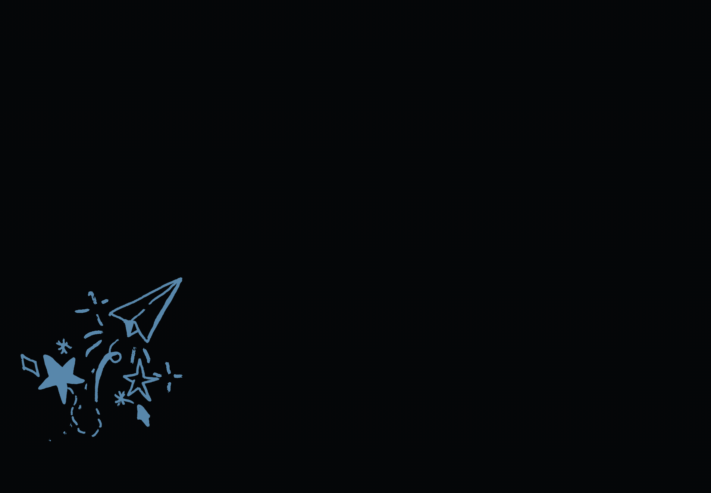

Om mig
Mit navn er Stephanie, jeg er 23 år og studerer Multimediedesign på Zealand i Køge. Jeg brænder for den kreative del af faget og arbejder især med grafisk design, UX/UI, webdesign, sociale medier, foto/video og branding.
Jeg kan godt lide at skabe visuelle løsninger, der både ser godt ud og fungerer i praksis. For mig handler godt design ikke kun om det visuelle, men også om hvordan brugeren oplever og forstår det.
Selvom jeg primært arbejder kreativt, har jeg også kendskab til kodning. Det giver mig en bedre forståelse for, hvordan design og udvikling hænger sammen, og hjælper mig med at omsætte idéer til løsninger, der faktisk kan bruges.
Jeg er nysgerrig, detaljeorienteret og elsker at lære nye ting. Jeg trives bedst, når jeg kan udvikle mig kreativt og arbejde med projekter, der giver mening.

Uddannelse
Multimediedesign Zealand / Køge (2025 - nu)
Talentskolen, Designlinjen (2024 STX)
Vordingborg Gymnasium 2020 – 2023
Folkeskole: Humlebæk skole & Stege skole
Soft Skills
Tidsstyring
Kreativ tænkning
Detaljeorienteret
Positiv og engageret
God til samarbejde
Hard Skills
Interesse
Fotografi
Design og branding
Sociale medier
Kreative projekter
Sprog
Dansk – Flydende
Engelsk – Flydende
Tagalog – Modersprog
Spansk – Let øvet
Tysk – Let øvet